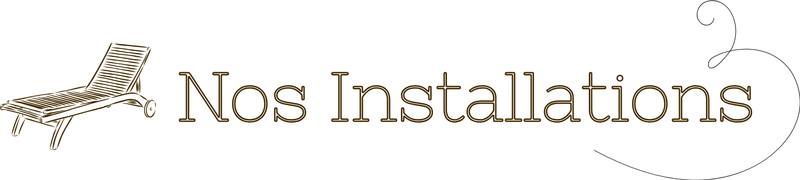

Bienvenue au Too Many Cooks. Institute
Au cœur du quartier emblématique de la Goutte d’Or, niché entre les voies désaffectées du RER B et un repaire de crackheads encore actif, notre institut vous accueille dans un calme troublant. Venez parcourir ses couloirs végétalisés et ses salons aux décors authentiques.

Espace Hydrothermal
Les équipements dernière génération de notre espace d’hydrothérapie sauront séduire les néophytes comme les plus érudits. Soucieux de notre impact écologique, et afin de réduire notre consommation d’eau, la piscine a été vidée.
Nous n’utilisons aucun produit chimique dans le jacuzzi et le hammam, l’eau n’est pas traitée. Les symptômes de la gale ou de la dengue peuvent apparaître après votre baignade.
Nous déclinons toute responsabilité en cas de décès.
Espace Fitness et Relaxation
Une zone de remise en forme pensée pour libérer le corps et l’esprit, dans un décor singulier entre art nouveau et brutalisme. Ce design éblouissant, signé par Philippe Starck, est une invitation à la relaxation.
Profitez des vélos elliptiques et tapis « Upcyclés » à partir de sacs à dos BasicFit saisis par la justice. Le salon « Chill Zone » est spécialement conçu pour les plus fainéants d’entre vous : accessible via un monte-escalier Stannah, service de livraison « Gourmet » assuré par nos hôtesses en uniforme Deliveroo et musique d’ambiance douce et relaxante.
Nouveauté : le solarium est à présent ouvert de 22 h à minuit pour éviter les lésions cutanées liées aux rayons UV.
Espace Massage
Évacuez les tensions entre les mains de nos praticiens talentueux, qui exercent dans notre espace massage tout équipé. Du massage thaïlandais à l’extraction d’une dent de sagesse, vous trouverez sans aucun doute le soin qu’il vous faut.
Baignés dans la lumière naturelle et les fragrances tropicales, nos salons de massage ne sont pas soumis aux obligations en matière d’hygiène et de sécurité incendie.
Nous proposons une assurance décès et invalidité lors de la réservation. Voir conditions en magasin, jeu sans obligation d’achat.
Notre carte des Soins
Chez Too Many Cooks. Institute, nos soins réconfortants apaisent les maux les plus profonds et ancrés en vous.
Peur de la mort, manque de confiance en vous ou simple névrose psychotique, aucun de ces troubles musculosquelettiques ne résiste aux mains expertes de nos praticiens.
Offrez-vous une thérapie régénérante et découvrez la vie sous un jour nouveau.
Libérez-vous des chaînes infâmes du capitalisme patriarcal qui vous aliène de jour en jour et respirez enfin le doux parfum de la liberté.

Nos praticiens disposent d’une expertise. Ce n’est peut-être pas celle que vous attendiez, mais elle est bien réelle. Leurs méthodes ne sont pas validées, mais leurs résultats ne laissent personne indemne.
Titouan
Formé sur le tas, il ne connaît pas les techniques du massage, mais fait de son mieux et apprend à maîtriser sa force. Sa méthode s’intitule « compression intuitive », et ne nécessite aucun diplôme reconnu.
Originaire de la banlieue de Roubaix et autodidacte, il s’est formé en massant les pieds de sa mère, caissière chez Desigual, aujourd’hui décédée.

Josiane
Passionnée de nécrologie et de permaculture, Josiane propose une prestation connectée à la terre et à la nature. Elle repère les blocages que la médecine conventionnelle préfère ignorer.
Ne vous fiez pas à son bracelet électronique, certes, ses méthodes novatrices et subversives ne conviennent pas aux juges bien-pensants, mais elles vous assureront des résultats sans pareils.

“Une expérience inoubliable. J’y retournerai jamais !”
“Mon mec a oublié son caleçon sale et personne n'a accepté de nous le renvoyer par la poste. SAV de Merde !”
“Très disruptif, j’ai perdu le sommeil pendant 3 jours... ce qui était le but.”
“Josiane m’a simplement fait asseoir sur une chaise haute, et m’a dit : ‘Tu es déjà au sommet’. J’ai fondu en larmes.”
“Un concept innovant, je ne comprends pas tout mais ça a changé ma vie.”
“Le soin était intense. À un moment, j’ai cru que c’était ma mère qui me parlait. Pourtant elle est morte en 2007.”
“Titouan m'a cassé la clavicule alors que j'avais réservé un massage des pieds. Je ne recommande pas.”
“J’ai pleuré deux fois. Une fois de douleur, une fois de soulagement. Je ne sais plus dans quel ordre.”
“J’ai perdu un rein pendant mon soin. Heureusement j’en avais deux.”

FAQ
Non, vous pouvez chier autour de la piscine. Interdit de courir en revanche.
Non.
Absolument. Nous offrons une expérience inoubliable, généralement accompagnée de troubles gastriques, allant de la chiasse fulgurente à l'ulcère.
Vous avez droit à une indemnité, n'oubliez pas de vous déclarer via le formulaire Cerfa n°11135*04, accessible sur ameli.fr
Bien sûr. Les enfants sont tolérés, à condition de les déposer à l'entrée de l'institut. Pas d'inquiétude, ils seront pris en charge par les résidents extérieurs errant autour des voies ferrées.
Nous ne pouvons malheureusement pas fournir d’informations à ce sujet, conformément à notre politique de confidentialité.
Contact
üìû Nous contacter : 0756892817 (2,02 ‚Ǩ la minute)
üìß reservation@toomanycooks.lol
Vous pouvez nous contacter à toute heure… Mais le téléphone ne fonctionne plus depuis l’incident du 12 février.
üìå Où nous trouver ?
Depuis le parking de la Gare du Nord, niveau -3, suivez l'odeur d'urine des crackheads. Une fois dehors, traversez les voies ferrées sur 2 km vers le nord (faites vite, vous pourriez vous faire pincer très fort).
Descendez l’escalier central, situé au milieu des voies et jonché de seringues usagées, puis suivez les néons vacillants. Au bout du couloir, empruntez la porte sans poignée...